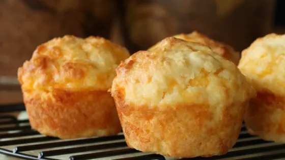

Cheesy Muffins

Description
Easy to make cheese muffins the whole family can enjoy.
Ingredients
- 1 cup of self raising flour
- 1 cup of milk
- 1 cup of grated cheese
- 1 egg
- A pinch of salt
- 1 teaspoon of chopped rosemary - (optional)
Steps
- Turn oven on to 180 degrees
- Mix flour, salt and rosemary in a bowl
- Mix in egg
- Add milk
- Add cheese, then mix
- Spray canola on small muffin tray (24x muffin tray)
- Scoop in mix
- Bake for 8 minutes, then turn tray around. Bake for another 6 minutes, until golden
- ENJOY!